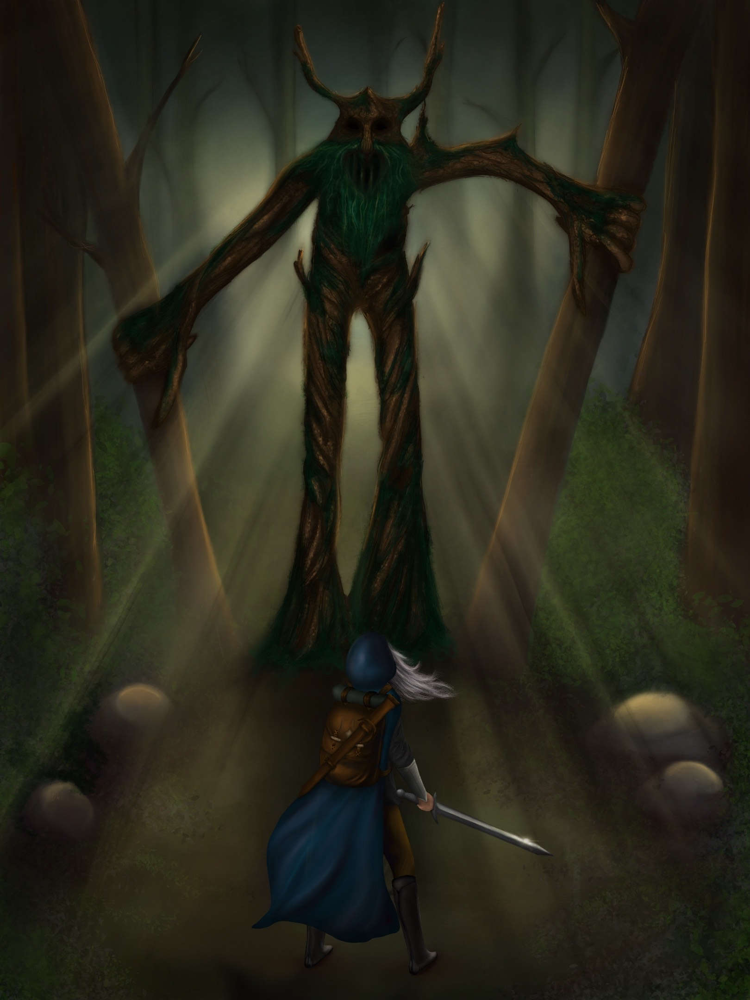

This image was drawn digitally by me, on my iPad in a program called Procreate. I made up the name just now, first I went for "Forest", but then I thought putting "The" in front would make it sound more ominous. It was for a Game Design Program that I applied to, and the prompt was, "An adventurer is hiking alone when suddenly an enormous creature appears, and it is obvious the hiker is not welcome in its territory. The hiker prepares for a fight." Something along those lines. Therefore you were given a lot of creative freedom. It's the first big piece of art I've ever done with a whole background etc. Usually I settle for a face and that's it. So it was a fun, but demanding challenge. The thought process during the creation of it was that I wanted a strong female character being presented. And the overall vibe I was going for was definitely with Lord of the Rings, or Game of Thrones as a source of inspiration.
